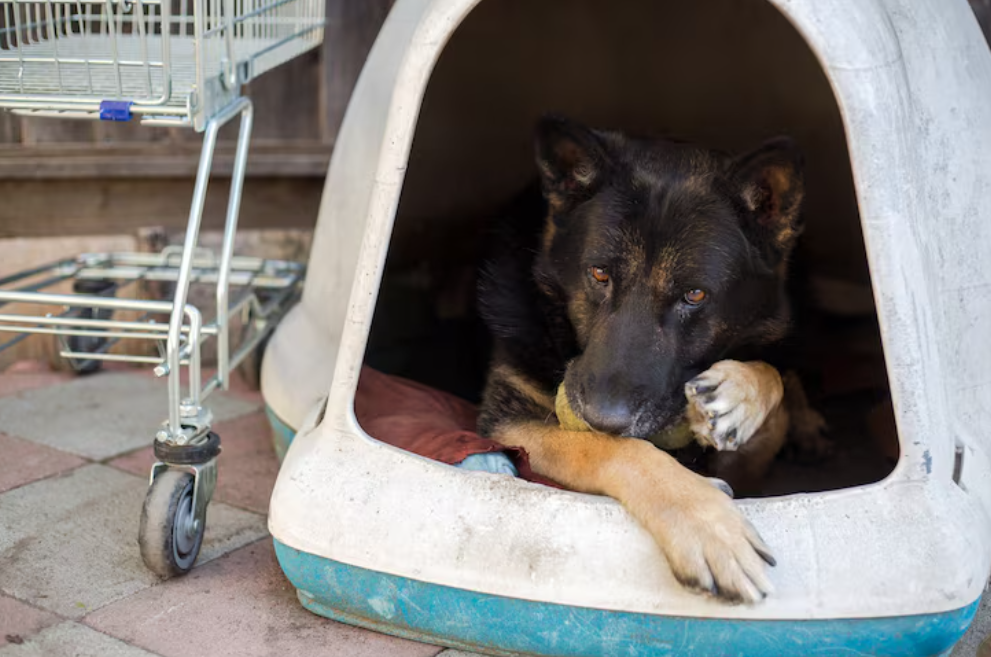

Mude um destino. Adote um amigo
Adote, doe ou compartilhe — juntos podemos mudar o destino dos animais abandonados de Campina Grande
sobre a ONG
A a4 é uma organização sem fins lucrativos que atua em Campina Grande - PB, cuidando e promovendo a adoção de cães e gatos abandonados.
Nosso trabalho é mantido por voluntários e doações da comunidade, que acreditam em um futuro melhor para cada vida animal.
Missão
Reabilitar e encontrar lares amoros para animais em situação de risco, promovendo a posse responsável.
Visão
Ser referência no bem-estar animal em Campina Grande, sonhando com um futuro onde nenhum animal sofra abandono.
Valores
Amor, respeito à vida, Transparência, Compromentimento, Educação e Cuidado em cada ação que realizamos.
🐶 A importância da adoção
Todos os dias, milhares de animais são abandonados nas ruas, sofrendo com fome e maus-tratos.
Ao adotar, você salva uma vida e ainda ganha um companheiro fiel. Adotar é um gesto de amor que muda dois destinos: o do animal e o seu. ❤️
Faça a diferença
Sua doação é essencial para manter nossa operação funcionando, comprar ração, remédios e custear atendimentos veterinários.
Contribua com qualquer valor - cada ajuda transforma vidas.
Ajude via PIX
Aponte sua câmera para o QR Code
Ou use nossa chave:
CNPJ - 06.262.522.0001-48
Copiar chave pixPerguntas Frequentes 🐾
Como posso adotar um animal?
Basta entrar em contato conosco pelo WhatsApp ou visitar nossos eventos de adoção. A equipe fará uma breve entrevista para garantir que o animal irá para um lar seguro.
Há algum custo para adoção?
Não cobramos taxas, mas pedimos colaboração opcional para ajudar com vacinas e cuidados básicos.
Posso visitar o abrigo antes de adotar?
Sim! Agende uma visita e venha conhecer nossos animais pessoalmente.
Como posso ajudar sem adotar?
Você pode fazer doações, apadrinhar um animal, divulgar nosso trabalho ou se tornar voluntário.
As doações são seguras?
Sim. Todas as doações vão diretamente para a conta da ONG e são usadas exclusivamente para o cuidado dos animais.